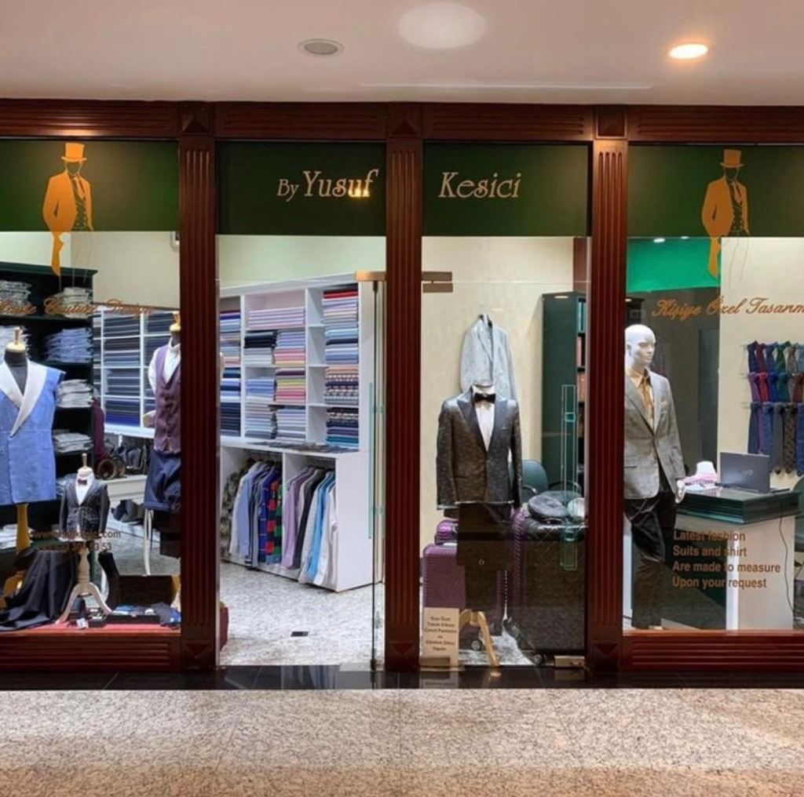
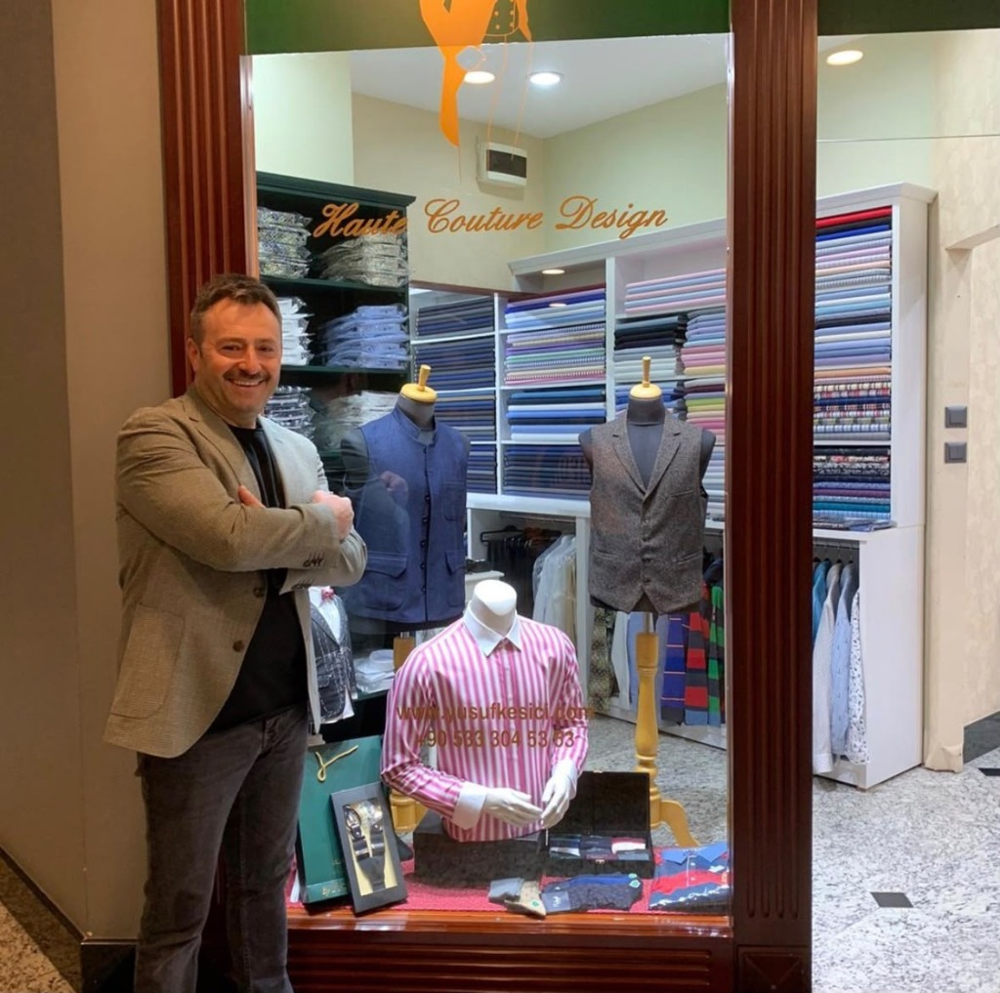

Kişiye Özel Kalıp & Kusursuz Uyum.
Bedeninize ve duruşunuza özel çıkarılan kalıplar, yüksek kalite kumaşlar ve usta el işçiliğiyle; üzerinize kusursuz oturan takım elbiseler dikiyoruz.


“İyi bir takım elbise üzerinizde ağırlık yapmaz; hareketinizle nefes alan konforlu bir şıklık sunar.”
— Yusuf Kesici · Usta TerziKişiye Özel Kalıp & Usta El İşçiliği.
Standart hazır kalıplar yerine; omuz eğiminiz, duruşunuz ve hareket rahatlığınız esas alınarak adınıza sıfırdan kalıp çıkarılır.
Kişiye Özel Dikim Alanları
Her biri bedeninize özel hazırlanan, konforlu ve zamansız giyim disiplinleri.
Özel Dikim Takım Elbise
İş hayatı ve özel davetler için vücut ölçülerinize göre hazırlanan ceket ve pantolon birlikteliği. Kusursuz omuz çizgisi ve gün boyu süren hareket rahatlığı.
Randevu Alın →Smokin & Damatlık
Düğün ve en özel geceleriniz için ipek saten yaka detayları, kaliteli kumaşlar ve zarif el işçiliğiyle hazırlanan özel smokinler.
Randevu Alın →Özel Ceket & Blazer
Hafta sonu ve spor-şık kombinleriniz için hafif omuzlu, rahat kalıplı ve modern kesimli el yapımı tek ceketler.
Randevu Alın →El Yapımı Gömlek
Yüksek kaliteli pamuk kumaşlar; boyun kalınlığınıza ve kol boyunuza göre tasarlanan özel yaka ve manşet detayları.
Randevu Alın →Kaşmir Palto & Kaban
Kış ayları için sıcak tutan, hafif ve dökümlü saf kaşmir ve kaliteli yün dış giyim parçaları.
Randevu Alın →Gardırop Danışmanlığı
Mevsimlik kıyafet planlaması, stil uyumu ve mevcut özel dikim parçalarınızın bakım, ütü ve revizyon hizmetleri.
Randevu Alın →Kişiye Özel Dikim Süreci
İlk tanışmadan teslimata kadar her aşamada şeffaf, konforlu ve tamamen sizin beklentilerinize odaklanan 4 adımlı terzilik akışı.
Randevu & Tanışma
Atölyemizde kahveniz eşliğinde tarzınızı, kullanım amacınızı ve isteklerinizi dinliyoruz. Nasıl bir duruş ve model istediğinizi birlikte belirliyoruz.
Birebir GörüşmeKumaş & Detaylı Ölçüm
Avrupa ve İtalyan kartelalarından kumaşınızı seçiyoruz. Vücut yapınıza ve duruşunuza özel milimetrik ölçülerinizi alarak adınıza özel kalıbınızı çıkarıyoruz.
İtalyan Kumaş & KalıpÖzel Dikim & Prova
Usta ellerde hazırlanan giysinizi tamamlanmadan önce prova ediyoruz. Omuz dengesi, kol boyu ve rahatlık detaylarını üzerinizde birebir test ediyoruz.
Hassas Prova DeneyimiKusursuz Teslimat
Son ütü ve ince işçilik kontrollerinin ardından, özel koruyucu kılıfı ve ahşap askısıyla giysinizi teslim ediyor, üzerinize tam oturmasını garanti ediyoruz.
Kusursuz Oturum Garantisi“Ölçümden teslimata kadar her aşama kusursuzdu. Ceketin omuz oturuşu ve kumaşın dökümü tam istediğim gibi oldu. Bedenime bu kadar rahat oturan başka bir takım elbise giymedim. Yusuf Bey'in emeğine sağlık.”
“Düğünüm için diktirdiğim ipek şal yaka smokin davette herkesin dikkatini çekti. Beyaz teyelli ara prova sayesinde en ufak potluk dahi kalmadı. Gerçek bir zanaat deneyimi.”
“İtalya'dan özel karteladan kumaş seçimi yaptık. Beklediğimden çok daha hızlı tedarik edildi ve dikim aşamasındaki ilgi, kahve eşliğindeki sakin sohbet çok özel hissettirdi.”
“Hazır giyimde omuz ve kol boyu uymayan biri olarak ilk kez üzerime tam oturan ve gün boyu nefes alan bir suit takıma kavuştum. Kumaş kalitesi ilk dokunuşta fark ediliyor.”
“Super 150s kumaşın dökümü, el dikişleri ve iç telanın esnekliği muazzam. Yusuf Kesici terzihanesi işini saygıyla ve büyük bir zanaatkarlıkla yapan nadir adreslerden.”
“Kışlık kaşmir kabanımın ağırlığı ve kesimi harika oldu. Randevu usulü çalışılması sayesinde atölyede geçirdiğimiz her dakika yalnızca bizimle ilgilenildi. Teşekkürler.”
“Gömleklerin yaka formu ve kol boyu milimetrik oturdu. Ceketle beraber oluşturulan siluet toplantılarda özgüven veriyor. Düzenli gardırobumu emanet edeceğim.”
“Orman yeşili kruvaze takım diktirdim. Klasik zarafeti modern hafiflikle buluşturan olağanüstü bir terzilik anlayışı. Tüm çevreme gönül rahatlığıyla öneriyorum.”
Birebir Atölye Randevusu
Her misafirimize kesintisiz zaman ayırabilmek amacıyla görüşmelerimiz randevu usulüyle gerçekleşmektedir.
Randevu Talep Formu
Tercih ettiğiniz tarih ve hizmet detayını ilettiğinizde en kısa sürede takvim uygunluğunu teyit etmek için sizinle iletişime geçiyoruz.
By Yusuf Kesici Terzihanesi
Zanaatın ve sessiz lüksün buluştuğu atölyemizde sizleri ağırlamaktan onur duyarız. Tüm görüşmeler ve provalar birebir özel olarak gerçekleşmektedir.
Görüşmeler teyitli randevu saatine göre planlanmaktadır.
Şişli / İstanbul · Özel otopark ve vale mevcuttur.
WhatsApp Hattı: 0533 304 53 53
Randevu Talebiniz Alındı
By Yusuf Kesici Terzihanesi'ne gösterdiğiniz ilgi için teşekkür ederiz. Usta terzimiz veya asistanımız en kısa sürede takvim teyidi için sizinle iletişime geçecektir.